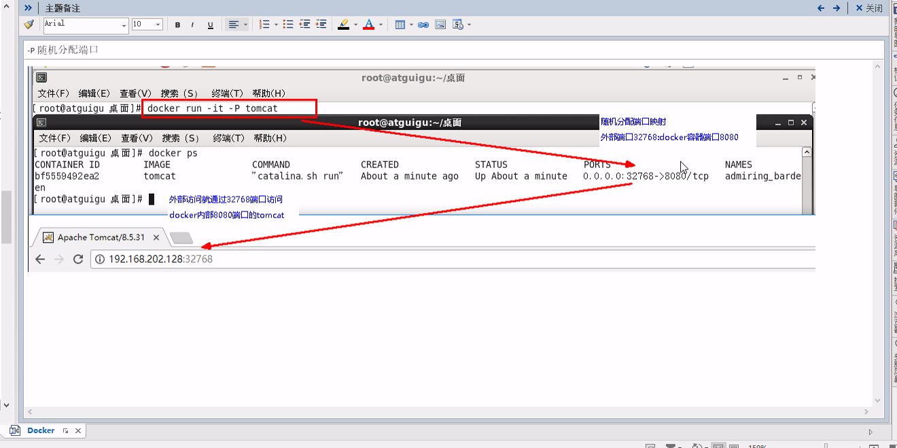
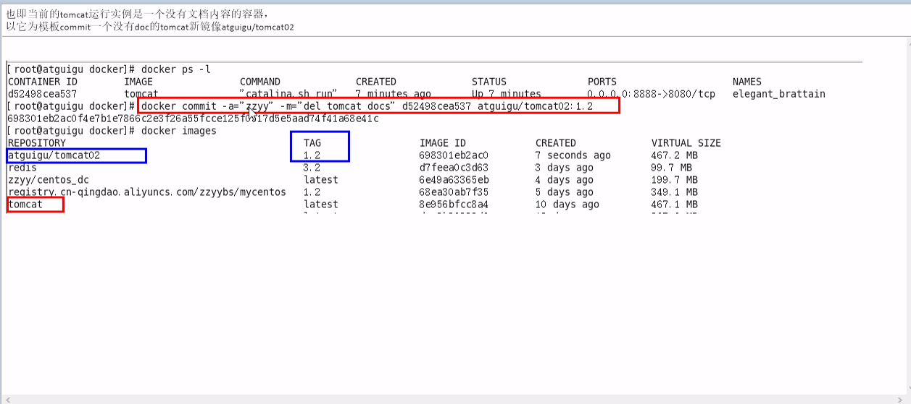
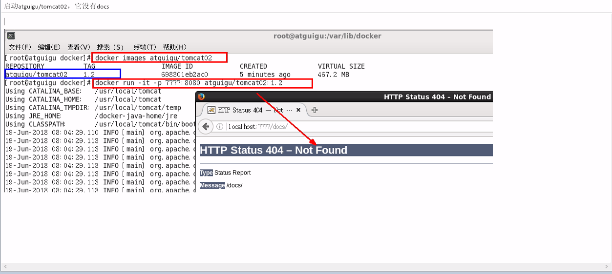
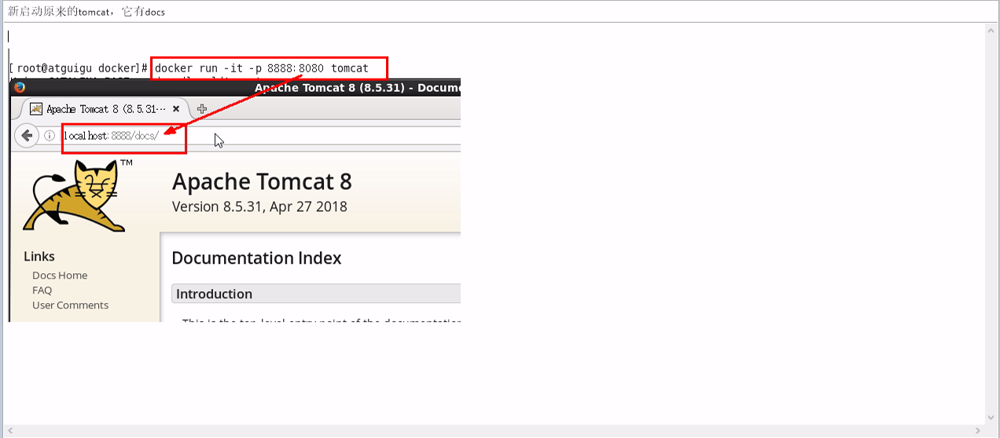

Docker 镜像
镜像是一种轻量级、可执行的独立软件包，用来打包软件运行和基于运行环境开发的软件，它包含运行某个软件所需的所有内容，包括代码、运行时、库、环境变量和配置文件。
UnionFS（联合文件系统）
UnionFS（联合文件系统）：Union文件系统（UnionFS）是一种分层、轻量级并且高性能的文件系统，它支持对文件系统的修改作为一次提交来一层层的叠加，同时可以将不同目录挂载到同一个虚拟文件系统下（unite several directories into a single virtual filesystem）。Union 文件系统是Docker镜像的基础。镜像可以通过分层来进行继承，基于基础镜像（没有父镜像）， 可以制作各种具体的应用镜像。
特性：
一次同时加载多个文件系统，但从外面看起来，只能看到一个文件系统，联合加载会把各层文件系统叠加起来，这样最终的文件系统会包含所有底层的文件和目录。
Docker镜像加载原理：
docker的镜像实际上由一层一层的文件系统组成，这种层级的文件系统UnionFS。
bootfs（boot file system）主要包含bootloader和kernel，bootloader主要是引导加载kernel，Linux刚启动时会加载bootfts文件系统，在Docker镜像的最底层是bootfs。这一层与我们典型的Linux/Unix系统是一样的，包含boot加载器和内核。当boot加载完成之后整个内核就都在内存中了，此时内存的使用权已经由bootfs转交给内核，此时系统也会写在bootfs。
rootfs（root file system）， 在bootfs之上。包含的就是典型Linux系统中的/dev， /proc， /bin， /etc等标准目录和文件。 rootfs就是各种不同的操作系统发行版，比如Ubuntu， Centos等等。
分层镜像：
以 pull 为例，在下载的过程中，可以看到docker的镜像好像是在一层一层的下载。
Docker 为什么要采用这种分层结构呢？
最大的一个好处就是--共享资源 比如：有多个镜像都从相同的base镜像构建而来的，那么宿主机只需要在磁盘上保留一份base镜像，同时内存中只需要加载一份base镜像，就可以为所有容器服务了。而且镜像的每一层都可以被共享。
镜像特点：
Docker镜像都是只读的，当容器启动时，一个新的可写层被加载到镜像的顶部。这一层通常被称作“容器层”，"容器层"之下的都叫做“镜像层”。
Docker镜像commit操作补充
docker commit 提交容器副本使之成为一个新的镜像。
docker commit -m="提交的描述信息" -a="作者" 容器ID要创建的目标镜像名：[标签名]
实例：
从Hub上下载tomcat到本地并运行成功
docker pull tomcat将镜像下载到本地并成功运行docker run -it -p 8080:8080 tomcat- -p：主机端口：docker容器端口
- -P：随机分配端口
- -i：交互
- -t: 终端 note：第一个8080指dicker对外暴露的端口。 第二个端口是tomcat的默认端口
在浏览器访问localhost:8080访问docker运行的tomcat, docker 随机分配的端扣。

- 故意删除上一步镜像生产tomcat容器的文档
也即当前的tomcat运行实例时一个没有文档内容的容器， 以它为模板commit一个没有doc的tomcat新镜像newTest/tomcat02 
将运行中的容器删光
docker rm -f $(docker ps -q)启动我们的新镜像并和原来对比
- 启动newTest/tomcat02, 它没有docs 
- 新启动原来的tomcat， 它有docs 